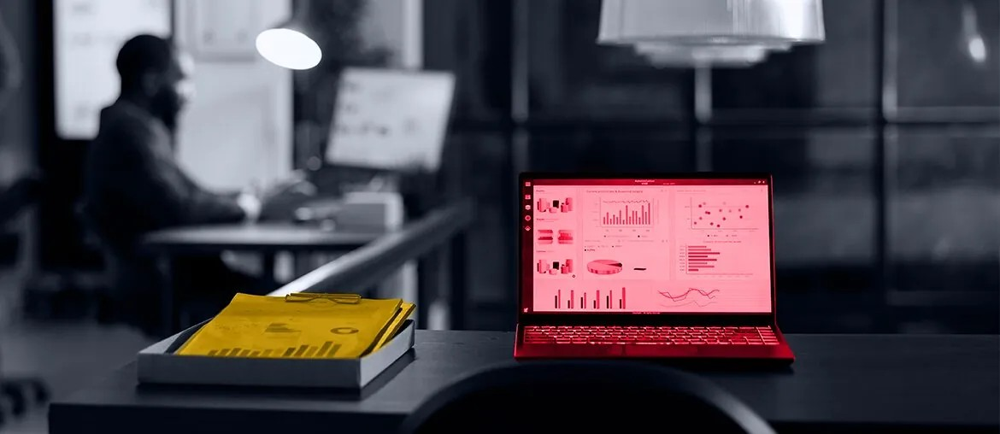

1
Map the full delivery path
Map the path from inbound brief to shortlist, proposal, and contractor handoff for German financial services work.
You already move strong data and technology talent. The harder part now is giving this new consulting motion a clean delivery spine behind each brief, shortlist, and client discussion.
We saw Xcede hiring a senior IT management consultant for financial services in Germany. That usually means demand is moving from single hires to broader transformation work across banks and insurers.
This role tells us Xcede is not only filling seats. You are building a consulting offer for banks and insurers around data, AI, and operating model change. That brings a harder mix of sales support, data quality, and delivery planning across many stakeholders. If those handoffs stay manual, briefs slow down, client trust drops, and good consultants spend too much time stitching process together.
We would start with a dedicated squad under your product and practice leads for one six-week pilot.
Map the path from inbound brief to shortlist, proposal, and contractor handoff for German financial services work.
Build one internal workbench for client notes, candidate signals, and consulting deliverables across Data, AI, and financial services searches.
Add dashboards for pipeline health, response times, and drop-offs so directors can spot blocked work before clients feel it.
Tighten outreach, recruiter verification, and data-access rules to reduce scam risk and protect candidate confidence.
Small enough to move fast, broad enough to cover platform, data, and reporting work.
We would work under your own leads, with weekly demos and a simple backlog you can steer.
Elinext is a full-cycle software development company, working since 1997 with around 700 in-house specialists and no freelancers. For work like this, what matters is steady delivery, secure process, and clear reporting. We bring ISO 27001 and ISO 9001, plus long work with Siemens, Broadcom, Volkswagen, and TUI. Our teams cover React, Angular, Node.js, Java, Python, QA, and delivery management. That lets us support the web platform, the data layer, and the reporting flow in one squad.
Two close examples from Elinext's financial-services work.

Elinext built the platform from scratch and stayed on as the scope expanded beyond the first MVP.
Read case study
Elinext added senior engineering support to a complex insurance web app and helped raise team productivity.
Read case studyIf this matches your 2026 push, we can scope the pilot together.
Talk to Elinext